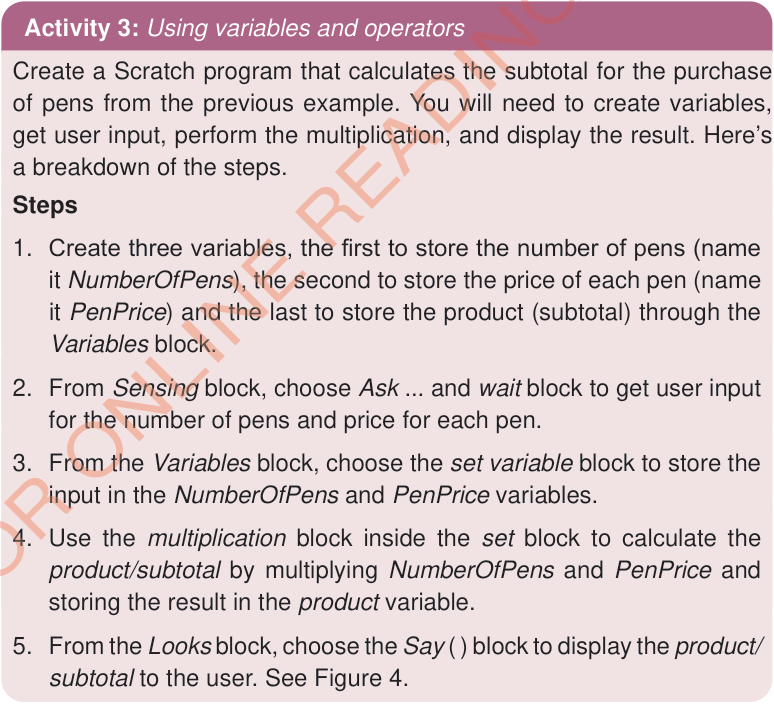

where PenPrice represent the price of each pen (which is 300) and NumberOfPens represent the number of pens purchased (which is 3).
Notice that in calculations, the arithmetic operator * is used to represent multiplication instead of × used in mathematics. Other arithmetic operators you can use include: addition (+), subtraction (–), division (/), and modulus (%). In addition to arithmetic operators, programs also use comparison operators such as less than (<), greater than (>), and equal to (=). There are also logical operators, including and, or and not.
The following activities demonstrate the use of variables and operators in performing calculations.

Activity 3: Using variables and operators
Create a Scratch/Quorum program that calculates the subtotal for the purchase of pens from the previous example. You will need to create variables, get user input, perform the multiplication, and display the result. Here’s a breakdown of the steps.
Steps
-
1.
Create three variables, the first to store the number of pens (name it NumberOfPens), the second to store the price of each pen (name it PenPrice) and the last to store the product (subtotal) through the Variables block.
-
2.
From Sensing block, choose Ask and wait block to get user input for the number of pens and price for each pen.
-
3.
From the Variables block, choose the set variable block to store the input in the NumberOfPens and PenPrice variables.
-
4.
Use the multiplication block inside the set block to calculate the product/subtotal by multiplying NumberOfPens and PenPrice and storing the result in the product variable.
-
5.
From the Looks block, choose the Say ( ) block to display the product/subtotal to the user. See Figure 4.